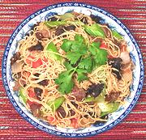

|
Fried Noodles with BeefVietnam | ||||
| Serves: Effort: Sched: DoAhead: |
2 main ** 35 min Most |
This stir fry can also be made with Pork or Chicken. Of "street food" origin it is tasty, quick to prepare and cooks in just a few minutes. You'll need a wok for space and easy to use tongs for handling the noodles. | |||
| In Vietnam and Thailand, Noodle dishes are considered Chinese, whether or not they have ever been made in China, so are usually not hot, but I like some hot sauce with this. In Thailand, noodles are the only dishes eaten with chopsticks. | |||||
|
3 3 1/2 6 4 6 3 ------ 1-1/2 1-1/2 1/4 1/2 ------ 2 |
oz oz T oz oz oz oz --- T T c t --- T |
Black Fungus (1) Chinese noodles (2) Oil Beef lean Onion Tomato Celery -- Sauce Fish Sauce (3) Soy Sauce light Stock Pepper black --------- Oil |
Prep - (15 min)
|